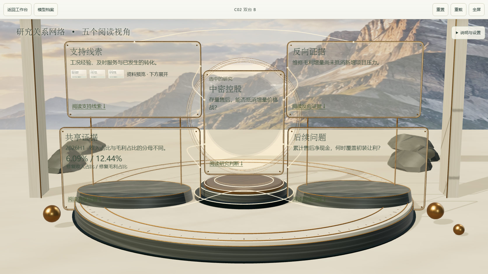
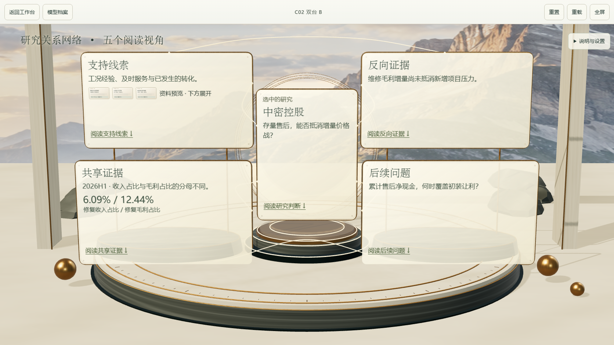
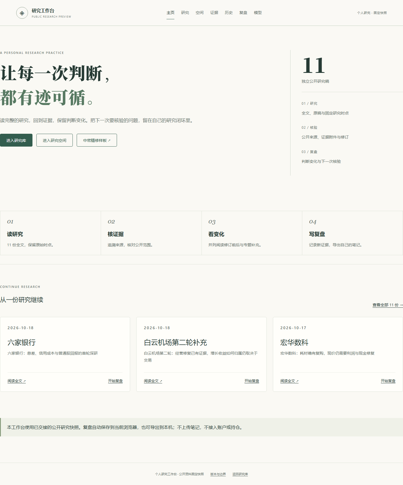
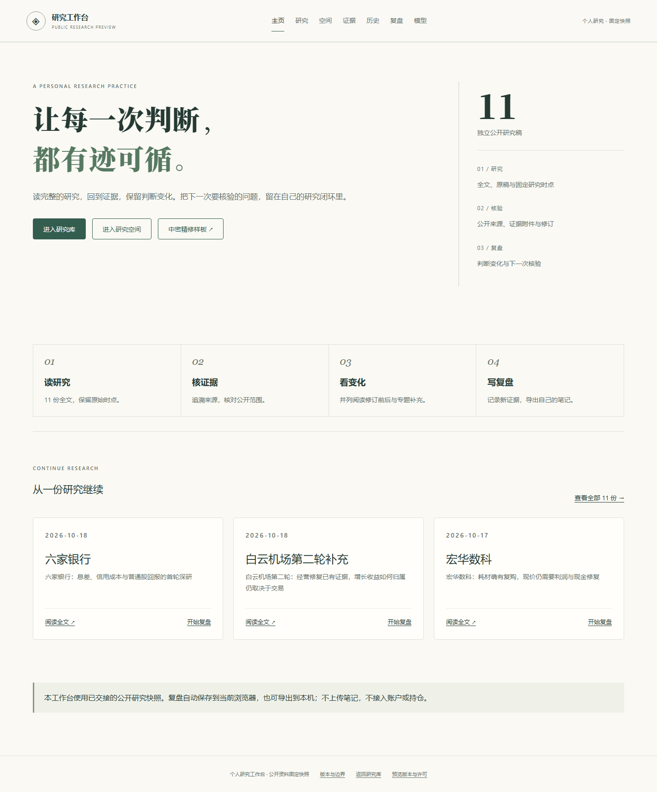

BROWSER REVIEW · 2026-10-20
同机位，看实际变化。
Windows Chromium 实际画面；WebGL 使用 SwiftShader 软件渲染。没有据此认定硬件 GPU、真实手机性能或用户视觉验收已通过。
C02 空间概览
1672 × 941，相机与模型字节完全一致。只增强索引文字的浅色底层，完整正文仍在下方。




完整主页




独立模型


BROWSER REVIEW · 2026-10-20
Windows Chromium 实际画面；WebGL 使用 SwiftShader 软件渲染。没有据此认定硬件 GPU、真实手机性能或用户视觉验收已通过。
1672 × 941，相机与模型字节完全一致。只增强索引文字的浅色底层，完整正文仍在下方。



